{% raw %}

<article>
  <section class="problems">
    
    <div class="problem">
      <p>For each pair of triangles shown, say if they must be
      similar, must not be similar, or if there is not sufficient
      information to tell. If the triangles are similar, write the
      similarity statement (with a “~”), paying attention to the
      correct order of the letters.</p>

      <p class="problem-part">
        <figure>
          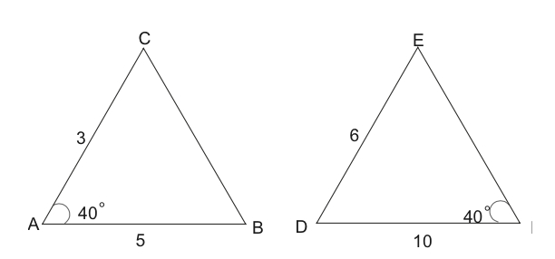
        </figure>
      </p>
    

      <p class="problem-part">
       <figure>
          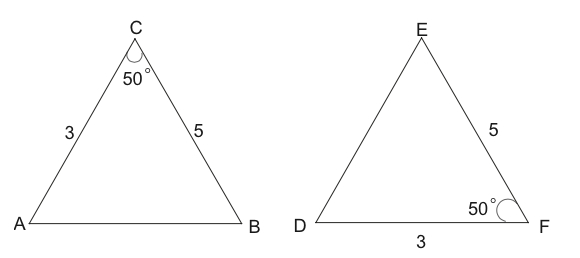
        </figure>  
      </p>

      <p class="problem-part">
        <figure>
          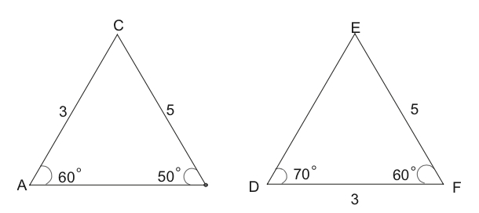
        </figure>
      </p>

      <p class="problem-part">
        <figure>
          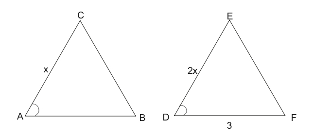
        </figure>
      </p>
  
      <p class="problem-part new-column">
        <figure>
          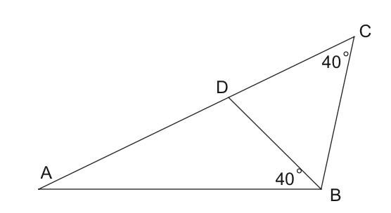
        </figure>
      </p>
    </div>
      
    <div class="problem">
      <p class="problem-part">In the figure below, AE is parallel
      to CD. Why are the triangles similar?</p>

      <p class="problem-part">Find all the missing side
      lengths.</p>

      <figure>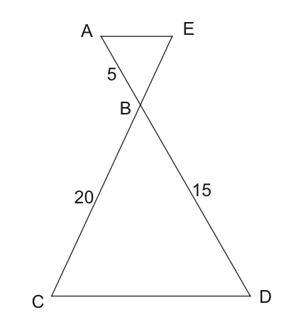</figure>
    </div>

    <div class="problem">
      <p>Below is an isosceles triangle with one of its sides
      extended. If angle A is $x$ degrees, find the measure of angle
      ABD in terms of $x$.</p>
      <figure>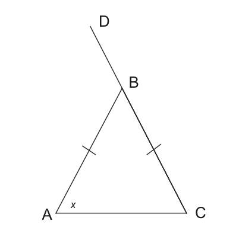</figure>
    </div>

    <div class="problem">
      <p>In triangle ABC, it is given that angle A is 59 degrees
      and angle B is 53 degrees The altitude from B to line AC is
      extended until it intersects the line through A that is
      parallel to segment BC; they meet at K. Calculate the size of
      angle AKB.</p>
    </div>

    <div class="problem">
      <p>In the picture below, $BC||DE$ . Find $X$ and $Y$.</p>
      <figure class="fig-50">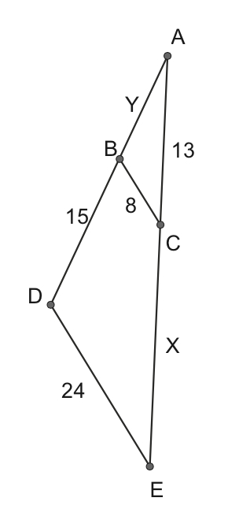</figure>     
    </div>

    <div class="problem">
      <p>ABC is a right triangle. The altitude to its hypotenuse is
      drawn, hitting the hypotenuse at point D. $AD = 9$ and $DC = 4.$
      Find $x$, the length of the altitude.</p>
      <figure class="fig-50">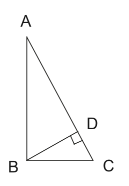</figure>
    </div>

    <div class="problem"> <p>In the figure below,
      $\angle ACD$ and $\angle BED$ are right angles. Name all the triangles in
      the figure that are similar to each other, using correct similarity
      notation.</p>


      <figure> 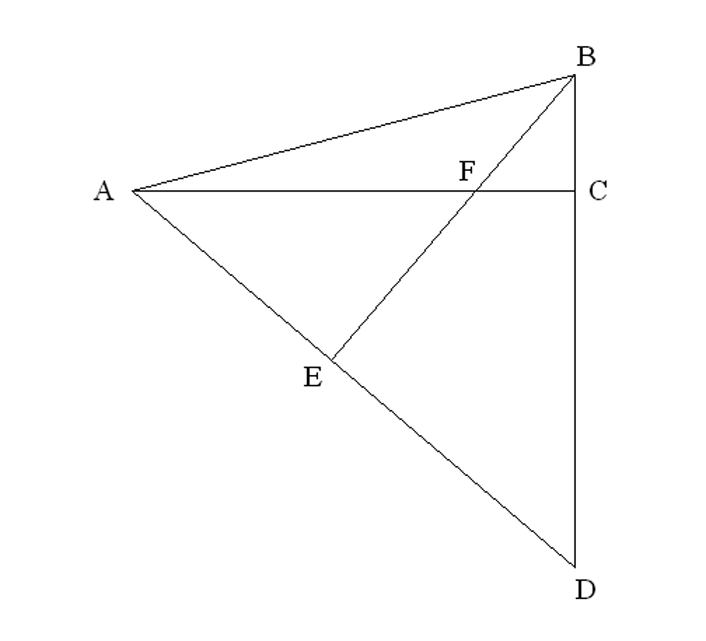 </figure>
    </div>

    <div class="problem">
      <p>In the figure below, $\overline {BE} \parallel \overline
      {CD} $, and $\angle ABE$ and $\angle C$ are right angles.
      Find each of the following.</p>

      <p class="problem-part">AB</p>

      <p class="problem-part">ED</p>
    

    <figure>
      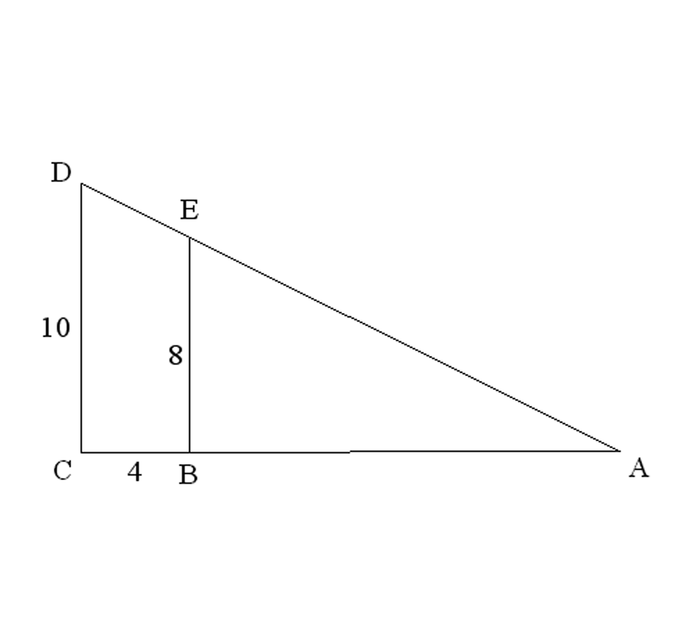
    </figure></div>

    <div class="problem">
      <p>Look carefully at the diagram below<br>
      before answering the following questions.</p>
    

    <figure>
      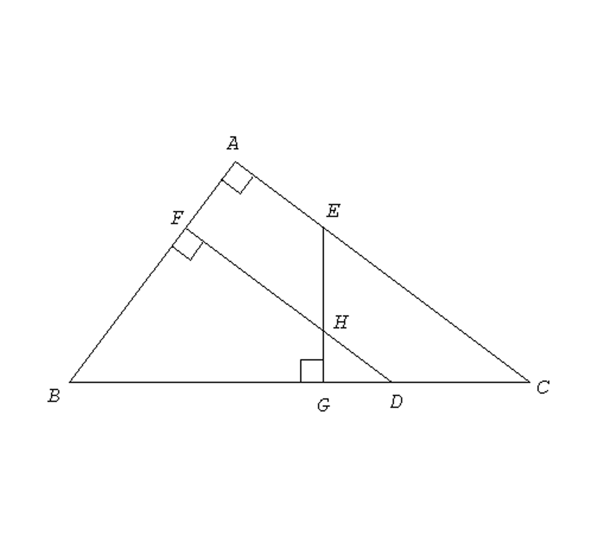
    </figure>

    <p class="problem-part">Name as many pairs of similar<br>
    triangles as you can. Use correct similarity notation.</p>

    <p class="problem-part">If $EC = 5.6$ , $CD = 3$ , $GD =
    1.48$ , and $FH = 3.75$ , calculate the length of $\overline
    {BF} $. You must show your work clearly.</p></div>

    <div class="problem">
      <p>What’s wrong with the picture drawn below?</p>
    

    <figure>
      
    </figure></div>

    <div class="problem">
      <p>Use the triangle below to determine the values of the
      following expressions.</p>
    

    <figure>
      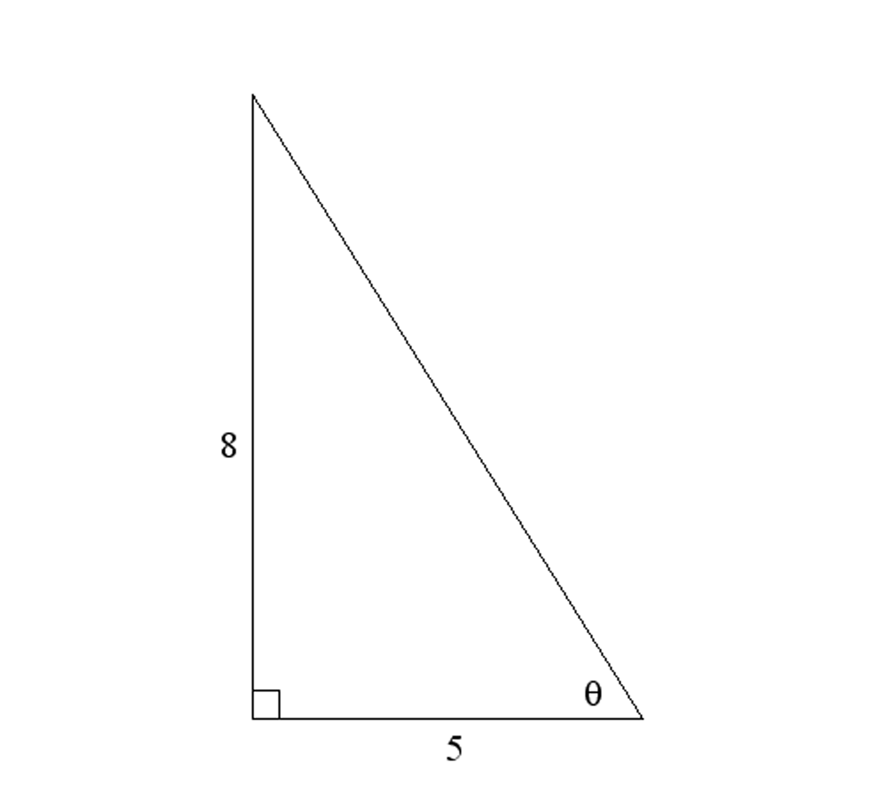
    </figure>

    <p class="problem-part">The exact length of the hypotenuse.
    This means don’t approximate its length.</p>

    <p class="problem-part">$\sin \theta $</p>

    <p class="problem-part">$\cos \theta $</p>

    <p class="problem-part">$\tan \theta $</p>

    <p class="problem-part">$\sin \left( {{{90}^ \circ } - \theta
    } \right)$</p>

    </div>

    <div class="problem">
      <p>Use trigonometry to calculate the lengths of the unknown
      sides of the right triangle given below. Show your work.</p>
    

    <figure>
      
    </figure></div>

    <div class="problem">
      <p>Recall that the convention for labeling sides and angles
      of triangles is to put side $a$ opposite angle $A$, etc.<br>
      Find the missing information in each<br>
      triangle:</p>

      <p class="problem-part">In triangle ABC, $\angle A =
      90^\circ ,{\rm{ }}\angle B = 25^\circ ,$ and $a = 18$. Find $b$
      and $c$.</p>

      <p class="problem-part">In triangle XYZ, $\angle X =
      90^\circ ,{\rm{ }}\angle {\rm{Y = 37}}^\circ {\rm{,}}$ and $z
      = 25$. Find $x$ and $y$.</p>
    </div>

    <div class="problem">
      <p>Why does your calculator give you an error when you try to
      do $\sin^{-1}(2)$, but not when you do $\tan^{-1}(2)$?</p>
    </div>

    <div class="problem">
      <p>The CN tower in Toronto is the highest tower in the world.
      You are standing 100 m away from the base of a tower. You can
      just see the top of the tower when you look up at a 79.7°
      angle. How tall is the tower?</p>
    </div>

    <div class="problem">
      <p>A student looks out of a second-story school window and
      sees the top of the school flagpole by angling his line of
      sight 22° above the horizontal. The student is 18 ft above
      the ground and 50 ft from the flagpole. Find the height of
      the flagpole.</p>
    </div>

    <div class="problem">
      <p>Squidward is in a plane that is 160 miles north and 85
      miles east of SpongeBob airport.</p>

      <p class="problem-part">How far away is the airport?</p>

      <p class="problem-part">What direction should the plane fly
      to go directly to the airport? (Your answer should be very
      specific and include an angle)</p>
    </div>

    <div class="problem">
      <p>An observer in a lighthouse 350 feet above sea level
      observes two ships approaching. The angle of depression to
      the first ship is $4^\circ $, and to the second is $7^\circ
      $. How far apart are the ships?<br></p>
    </div>

    <div class="problem">
      <p>What is the perimeter and area of the figure below?</p>
    

    <figure>
      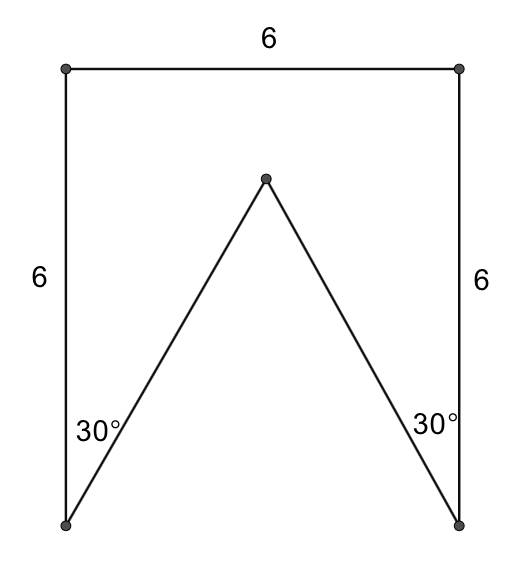
    </figure></div>

    <div class="problem">
      <p>A triangle has sides of length $g$, $g$, and
      $\frac{{7g}}{5}$ . Is it a right triangle? Explain.<br></p>
    </div>

    <div class="problem">
      <p>$\triangle ABC$ is a right triangle with right angle B. A line segment is
      drawn from angle B perpendicular to $\overline{AC}$. Where it intersects
      this side mark the point D. Let $BC = 12$ and $DC=11.07692$. Find the area
      of $\triangle ABC$. Show your work.</p>
    </div>

    <div class="problem">
      <p>A plane flies 500 miles from Boise to Snazziville, then
      changes direction at Snazziville and flies 840 miles to
      Dubuque. (see the picture below).</p>
    

    <figure>
      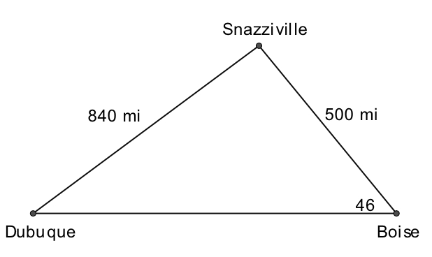
    </figure>

    <p class="problem-part">What is the measure of the angle with
    vertex Dubuque?</p>

    <p class="problem-part">How far is it from Boise to
    Dubuque?</p>

    <p class="problem-part">If the plane always flies at 600
    miles per hour, how much time was wasted going by way of
    Snazziville instead of going directly to Dubuque?</p></div>

    <div class="problem">
      <p>Simon and Paula are 30 kilometers apart, and they each
      spot a religious idol on fire in the distance (see the
      picture below).</p>
    

    <figure>
      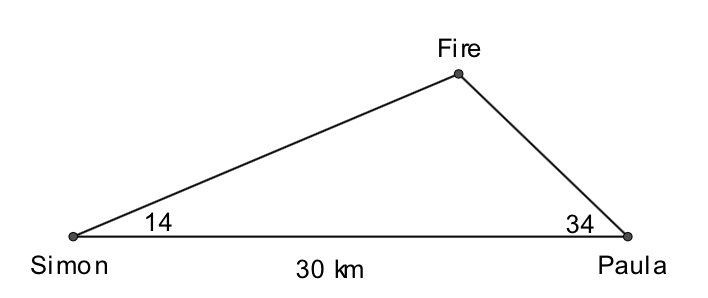
    </figure>

    <p class="problem-part">How far are Simon and Paula from the
    fire?</p>

    <p class="problem-part">What is the area of the triangle?</p></div>

    <div class="problem">
      <p>In parallelogram ABCD below, $BD = 12$ , $\angle A =
      75^\circ $, and $\angle BDA = 45^\circ $ .</p>
    

    <figure>
      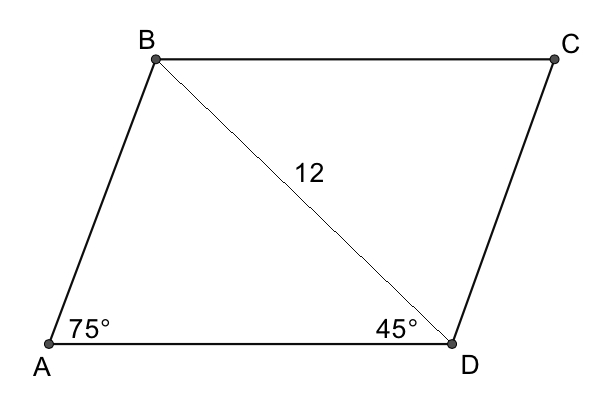
    </figure>

    <p class="problem-part">Find AB.</p>

    <p class="problem-part">Find the area of the
    parallelogram.</p></div>

    <p><br></p>

    <div class="problem">
      <p>In the figure below, find x, y, z, AB and BC.</p>
    

    <figure>
      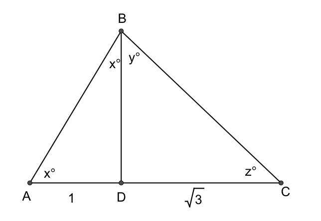
    </figure></div>

    <div class="problem">
      <p>The altitude (or height) of an equilateral triangle is 6.
      Find the triangle’s perimeter.</p>
    </div>

    <div class="problem">
      <p>The perimeter of a regular octagon is 72.</p>

      <p class="problem-part">What is the length of each
      side?</p>

      <p class="problem-part">What is the sum of its angles?</p>

      <p class="problem-part"> Find the area of the octagon.</p>
    </div>

    <div class="problem">
      <p>A right triangle has a perimeter of 24, and its hypotenuse
      is three times as long as its shorter leg. Find the lengths
      of all three sides of the triangle.</p>
    </div>

    <div class="problem">
      <p>When Snuffles looks up to the top of the Aquarium, he is
      looking up at an angle of $68^\circ $. When he steps back
      10 meters, now when he looks up to the top of the aquarium,
      he is looking up at only $50^\circ $. Determine the height
      of the aquarium, and the area of the triangle on the
      left.</p>
    

    <figure>
      <br>
      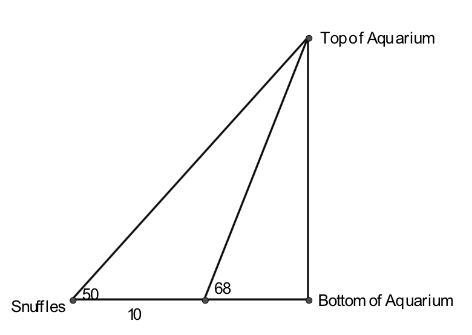<br>
    </figure></div>

    <div class="problem">
      <p>Tom Colicchio and Padma Lakshmi haven’t eaten in 5 days as
      the food that has been cooked for them hasn’t been fancy
      enough for them to deign to eat it. By this point, however,
      they are both starving. As in the picture below, a hamburger
      appears suddenly. Assuming Padma runs $1\frac{2}{3}$ times as
      fast as Tom, who gets to the burger first?</p>
    

    <figure>
      
    </figure></div>

    <div class="problem">
      <p>In right triangle ACB (where C is the right angle):<br>
      </p>

      <p class="problem-part">If a = 12 and $\angle B = 71^\circ
      $ , determine the rest of the angles and sides of the
      triangle.</p>

      <p class="problem-part">If, instead, c = 13 and b = 6,
      determine the rest of the angles and sides of this other
      triangle.</p>
    </div>

    <div class="problem">
      <p>In the diagram below, find Z.</p>
    

    <figure>
      
    </figure></div>

    <div class="problem">
      <p>Socrates, the Ancient Greek philosopher, was known for
      being a trickster. One day, Socrates claimed to have a
      triangle whose lengths were 5, 8, and 10. He also said that
      two of the angles in the triangle were ${50^ \circ }$ and
      ${27^ \circ }$ .<br>
      <br>
      Explain why Socrates’ triangle can’t possibly exist.</p>
    </div>

    <div class="problem">
      <p>Andrew decides to measure the height of a tree by using an
      idea he learned in class. He takes two poles—one 10 feet long
      and the other 14 feet long—and walks up to a very tall tree.
      He places the 14-ft tall pole to the side, walks with the
      10-ft pole straight out 36 feet from the tree and plants the
      pole so that it is parallel to the tree. He then walks along
      the same line father away from the tree until the
      line-of-sight from the ground to the top of the 10-ft pole
      intersects with the top of the tree. He marks this spot on
      the ground and measures from it to the base of the 10-ft
      pole. This distance is 6 feet. He then takes the other
      pole—the 14-ft one—and walks in the opposite direction from
      the 10-ft pole until he’s 40 feet from the tree. He plants
      the 14-ft pole so that it is parallel to the tree. He then
      walks along the same line farther away from the tree until
      the line-of-sight from the ground to the top of the 14-ft
      pole lines up with the top of the tree. He marks this spot on
      the ground and measures from it to the base of the 14-ft
      pole. This distance is d feet. (You’ll notice that I’m not
      telling you what this distance is. Heh, heh, heh!) Assume the
      ground is level throughout the entire area that<br>
      Andrew is measuring.</p>

      <p class="problem-part">Draw a diagram that shows the
      situation and all of the key measurements.</p>

      <p class="problem-part">Determine the height of the tree.
      Show your work.</p>

      <p class="problem-part">Determine what d is. Show your
      work.</p>

      <p class="problem-part">Did Andrew need both poles to
      measure the height of the tree? Explain.</p>
    </div>

    <div class="problem">
      <p>The circle below has a circumference of $48\pi $. The
      length of the arc AB is 12.</p>
    

    <figure>
      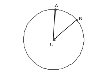
    </figure>

    <p class="problem-part">What is the radius of the circle?</p>

    <p class="problem-part">What is $\angle ACB$ ?</p>

    <p class="problem-part">If Josephine removed sector ACB (that
    is, the “piece of pie”) from the circle, what would the area be
    of what was left?</p>
      
    </div>

    <div class="problem">

    <figure>
      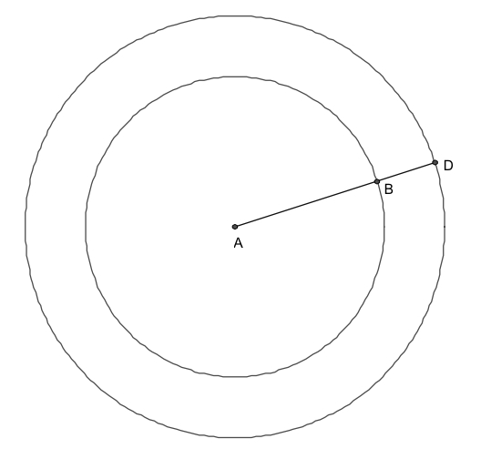
    </figure>

    <p class="problem-part">If the area between the circles above
    is $51\pi $, and $AD = 10$, find $BD$.</p>

    <p class="problem-part">If, alternatively, the area between
    the circles is $24\pi $ and $BD = 2$, find $AB$.</p></div>
  </section>
</article>
